| Premier jeu | - Ameliorations |
Un des premiers élèments que l'on peut remarquer c'est qu'en cas de chute, rien ne permet de retourner sur la plateforme. Je vais donc mettre en place un système de réapparition et quelque limitation pour éviter de tomber indéfiniment à l'avenir.
Je vais donc commencer par modifier le script de ma balle. Il faut que j'enregistre un point de réapparition et que je créer un moyen de renvoyer le personnage à ce point de réapparition. Je modifie donc le script en ajoutant ce qui suit :
@onready var point_reapparition = global_position
func reapparaitre():
global_position = point_reapparition
velocity = Vector2.ZERO
Le mot clé @onready permet d'indiquer au moteur de jeu que la variable ne doit être créer que lorsque le noeud de notre balle est prêt. Cela est nécessaire ici, car la position de la balle n'est valable qu'après la création de celle-ci par le moteur de jeu.
Dans ma fonction reapparaitre, je modifie aussi la variable velocity pour annuler la vitesse de déplacement du personnage. J'utilise pour cela Vector2.ZERO qui revient à définir velocity.x et velocity.y à 0.
Maintenant que notre script permet de réapparaitre, il faut lui dire quand le faire. Un des premiers cas classique est de définir une position vertical maximal que le personnage peut atteindre avant de réapparaitre. Cela permet d'éviter de tomber à l'infini, on retrouve cela dans la majeur parti des jeux 2D ou 3D. Dans le cas ou le personnage se retrouverais à traverser le sol, cela permet d'éviter une chute qui bloquerais le joueur et la progression.
@export var y_max = 1000.0
# ...
# Exécuté à chaque frame de gestion physique (collision et détection de contact)
func _physics_process(delta):
# ...
move_and_slide()
if (global_position.y > y_max):
reapparaitre()
Il est possible de construire une scène plus complexe. J'ai ici dupliquer les plateforme (Ctrl+D quand selectionné) pour construire un niveau plus conséquent.
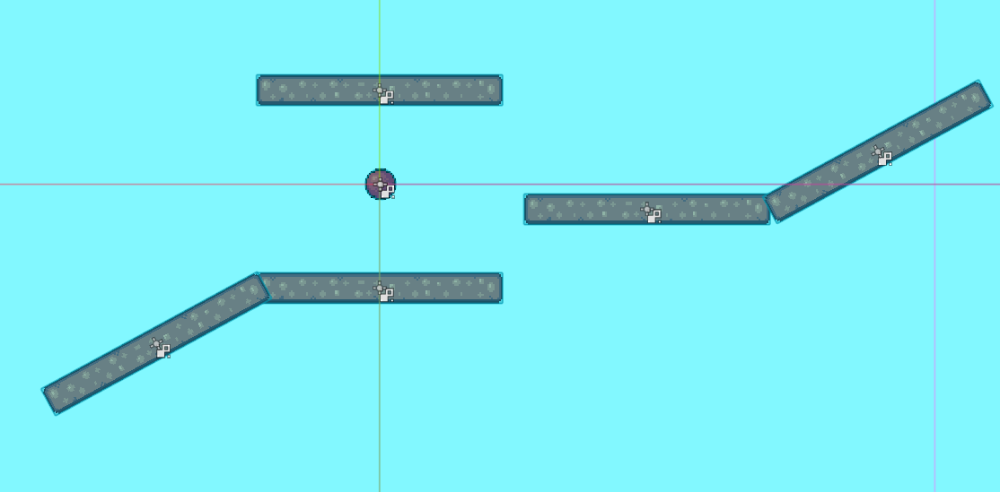
Cependent, je ne peut pas atteindre la platforme du haut. Celle-ci étant trop élevé. Je vais donc programmer la possibilité de faire un double saut (voir plus si on le souhaite).Le principe du saut multiple fonctionne comme suit : On définit le nombre de saut autorisé. Lorsque l'on saute, on dépense un saut. On peut donc sauté autant de fois qu'autorisé lorsque l'on est en l'air. On doit ensuite réinitialiser le nombre de saut lorsque la balle touche le sol.
Pour progammer cela, on a donc besoin de 2 nouvelles variables. Une indiquant le nombre de saut restant au personnage et une indiquant le nombre de saut à redonner lorsque l'on touche le sol.
#...
@export var nombre_saut = 2
var saut_restant = 0
# Exécuté à chaque frame de gestion physique (collision et détection de contact).
func _physics_process(delta):
# ...
# Réinitialisation des sauts.
if is_on_floor():
saut_restant = nombre_saut
# Gestion du saut.
if Input.is_action_just_pressed("Saut") and saut_restant > 0:
velocity.y = -force_saut * delta * 100.0
saut_restant -= 1 # On retire un saut
La variable saut_restant n'a pas besoin d'être exporté car elle est défini par notre programme. Il faut aussi remarquer que la condition du saut à changer. On ne test plus si le joueur est au sol mais si il a des sauts disponible.
Dernière remarque, la réinitialisation des saut est faites avant le saut car la detection is_on_floor ne change qu'une fois move_and_slide appelé. Dans mon cas, même si je vient de sauter, et tant que je n'ai pas demandé au moteur de jeu de déplacer notre balle, celle-ci est toujours considérée sur le sol.
Un autre point à améliorer, c'est le rendu de notre balle en fonction de ses différents états. On va donc ajouter des «animations» qui n'en sont pas vraiment. Pour cela je vais avoir besoin de plusieurs images :
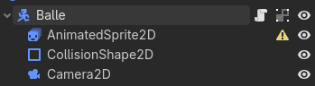
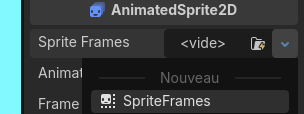
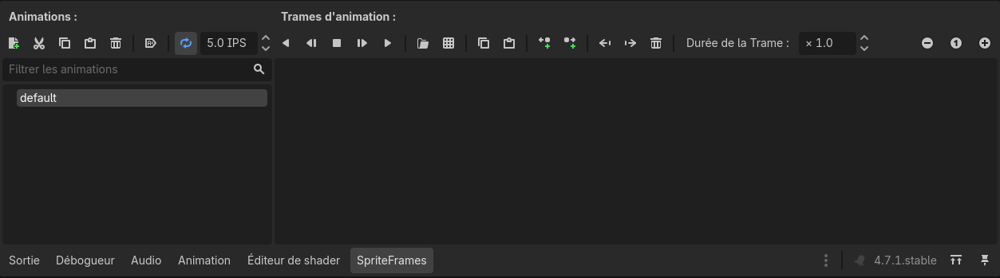
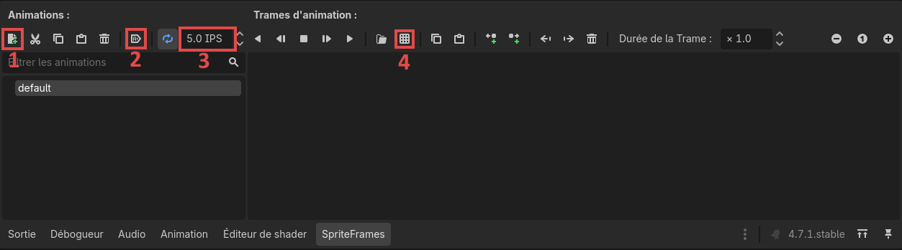
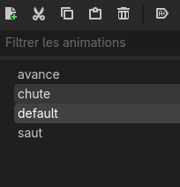
On va donc commencer par créer et renommer 3 nouvelles animations en plus de default.
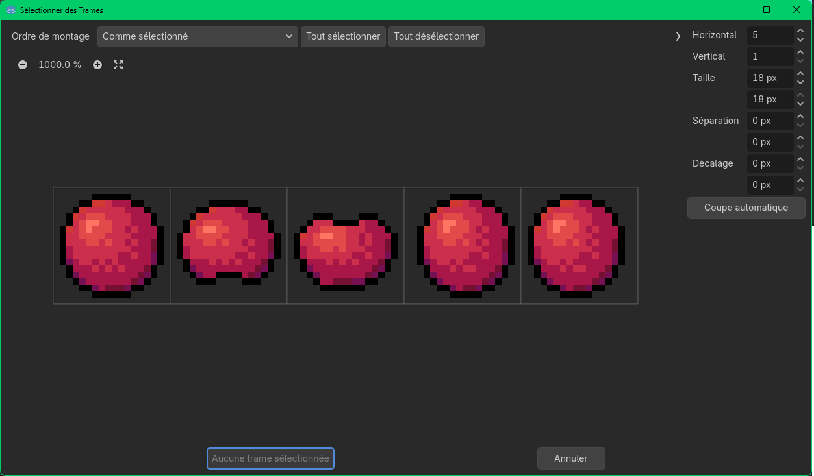
Voici mon paramétrage :
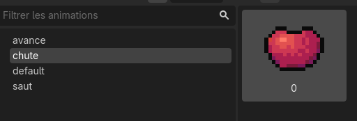
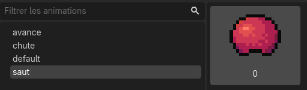
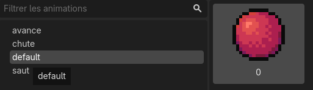
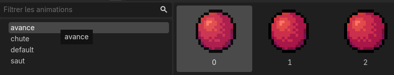
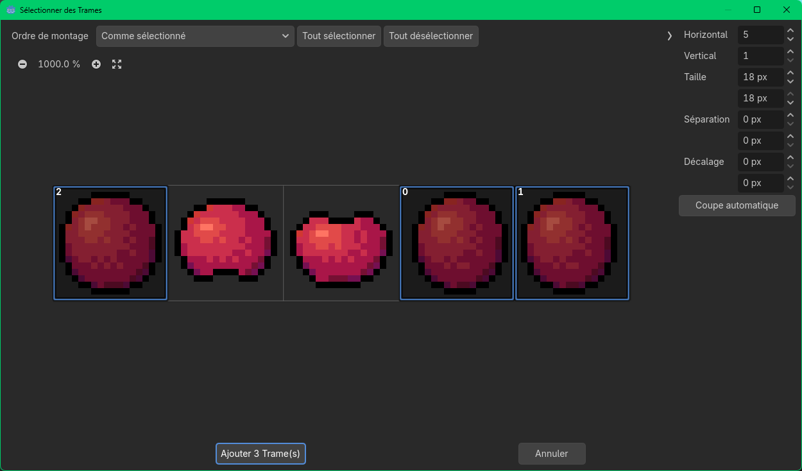
C'est fini pour la parti noeud et graphisme, mais, si je lance le jeu, il n'y a pour le moment aucun changement car je n'ai pas encore programmé les changements d'animations dans mon script. C'est donc ma prochaine modification.
Pour gagner du temps et que cela reste clair pour plus tard, voici le script final avec des commentaires expliquant les différents cas de figures. Quelques point cependant, $AnimatedSprite2D permet d'accéder au noeud du nom AnimatedSprite2D enfant de notre balle. Il faut bien remarquer le symbole $ qui permet d'appeler un autre noeud.
# Exécuté à chaque frame de gestion physique (collision et détection de contact).
func _physics_process(delta):
# ...
move_and_slide()
animation()
# ...
# Gestion des animations
func animation():
# On tourne la balle dans la bonne direction si elle se déplace
# velocity.x < 0 renvoie Vrai si la balle va vers la gauche et Faux si elle va vers la droite
# flip_h permet de faire un miroir horizontale de notre image (tourner un personnage à droite ou gauche)
if (velocity.x != 0): # Si la balle bouge horizontalement
$AnimatedSprite2D.flip_h = velocity.x < 0
# On joue l'animation la plus adapté pour chaque situation
if velocity.y > 0: # Si la balle chute (vitesse vers le bas)
$AnimatedSprite2D.play("chute")
elif velocity.y < 0: # Si la balle saute (vitesse vers le haut)
$AnimatedSprite2D.play("saut")
else: # Sinon la balle est au sol (pas de vitesse verticale)
if (velocity.x != 0): # Si la balle bouge (vitesse horizontale non nul)
$AnimatedSprite2D.play("avance")
else: # Sinon la balle ne bouge pas (vitesse horizontale nul)
$AnimatedSprite2D.play("default")